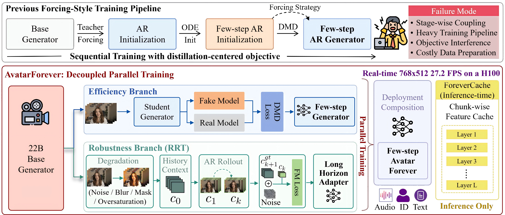

Project page
Real-time avatars.
Built for the long horizon.
Avatar-Forever decouples few-step generation from long-horizon robustness, enabling high-quality, effectively unbounded audio-driven avatar generation on a single GPU.
Model showcase
One model, diverse performances
Explore 67 inference results across talking, emotion, cinematic shots, singing, conversation, animals, and general scenes. Videos load only when played.
Beyond avatar-centric content
As observed in our conclusion, the same long-horizon training recipe can transfer to general streaming video generation. These early cases are encouraging; we are continuing to improve visual fidelity, motion, and robustness in general scenes.
Loading the video library…
Side-by-side evaluation
Comparison results
Matched cases compare Avatar-Forever and Avatar-Forever with ForeverCache against representative audio-driven avatar baselines.
Short-video comparison
Long-video comparison
Extended generation
11 minutes, one continuous rollout
An extended result demonstrates the model’s behavior well beyond the short clips commonly used for evaluating audio-driven avatars.
Core insight
Separate the capabilities.
Compose them at deployment.
Few-step generation and long-horizon robustness operate on different temporal scales. Avatar-Forever learns them independently instead of forcing both into one sequential distillation objective.
Efficiency branch
Full-parameter distribution matching distillation produces a high-quality few-step generator.
Recovery-oriented Rollout Training
A lightweight adapter learns to recover after errors propagate through multi-chunk autoregressive rollouts.
ForeverCache
Stable historical features are reused across denoising steps, reducing redundant context computation.
Framework
Parallel training.
Unified inference.
The efficiency and robustness branches start from the same video foundation model, train independently, and are combined only at deployment. ForeverCache then accelerates streaming inference without adding another training stage.

At a glance
Built for practical streaming
Headline results reported in the current manuscript.
Measured on a single NVIDIA H100 GPU.